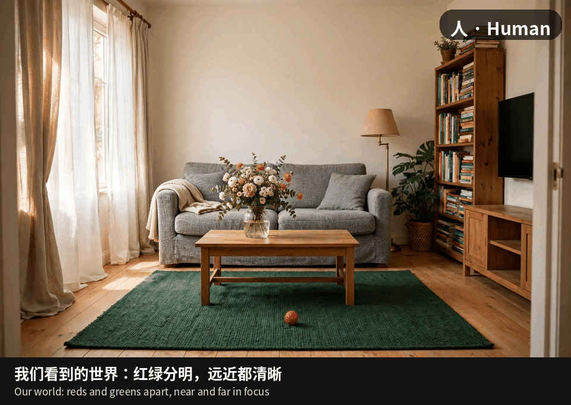

人 · Human
三色视觉，红绿分明，远近都清晰。
狗 · Dog
二色视觉，红绿分不清了，红球只剩明暗差别。
猫 · Cat
颜色变淡、画面变糊，弱光下反而看得更清。
蜜蜂 · Bee
红色消失了，花心出现紫外线蜜导图案（近似示意）。
鹰 · Eagle
远处书脊更清晰，细节一下子放大。
这是一个近似模拟，不是原样复刻。颜色换算按各物种实测的视锥峰值做，亮度做了守恒处理；紫外线在普通屏幕上无法真实还原，蜜蜂那一帧花心的图案是示意。没有任何模拟能等同于另一种动物的主观感受。